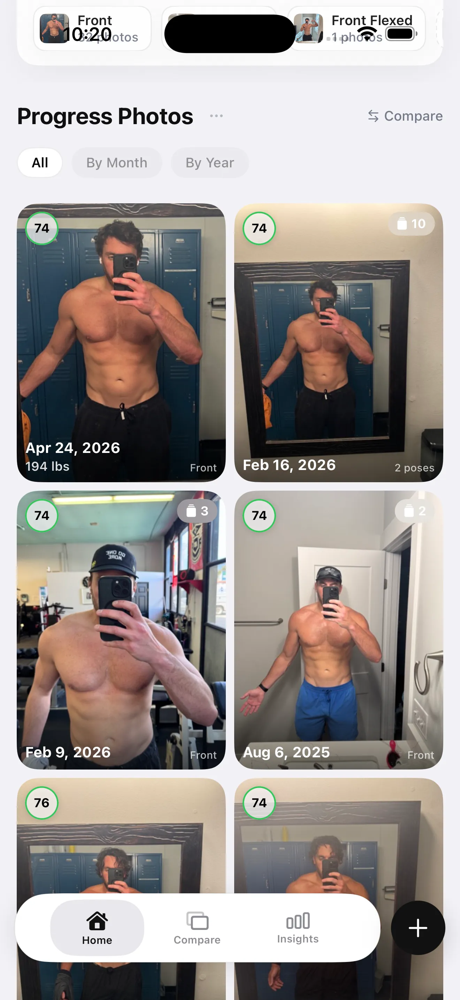

Best AI Body Transformation Apps (2026): 6 Trackers Tested & Ranked
Six apps tested for photo tracking, AI analysis, and measurements — ranked for gym-goers who want visual proof, not just a photo album.

You take the photo. You post it to a private album. Six weeks later you take another one, hold the two images side by side in your camera roll, and feel absolutely nothing — because you cannot tell if anything actually changed. The lighting is different. You are standing at a slightly different angle. Your pump was better last time. You give up trying and tell yourself the scale will be more informative. It is not.
This is not a motivation problem. It is a tooling problem. Taking a progress photo is the easy part. Having a system that lets you see, compare, and measure what changed is where most people fall short.
A body transformation tracker is a different category of app from a workout logger. Apps like Hevy or Strong track what you lifted. A transformation tracker tracks what your body actually looks like over time. The distinction matters because physique changes are slow, subtle, and easy to miss without the right frame of reference. These six apps are the best options in 2026 for building that frame.
What makes a good body transformation tracker
Before the list, three criteria worth holding each app against:
Consistency. A tracker is only useful if you use it the same way every week. The best apps make check-ins fast, give you framing guidance, and remind you when it is time. Friction kills habits.
Measurability. A photo album is not a tracker. A tracker extracts something from the photo that you can compare across time: body fat percentage, a score, a measurement, a written analysis. If you cannot pull a number or a structured comparison out of the app, it is just storage.
Visual evidence. The mirror lies. The scale is noisy. A properly organized timeline of progress photos is harder to argue with than either. The best apps present your history in a way that makes progress impossible to dismiss and regressions impossible to ignore.
1. GainFrame — Best overall body transformation tracker
Platform: iOS only · Price: Free (25 lifetime photos) / Pro $5.99/mo or $39.99/yr
GainFrame is built around a single idea: every photo you take should produce data you can track. When you log a check-in, the app sends your photo to Google Gemini AI for analysis, then returns a full body composition breakdown. You get an estimated body fat percentage, your FFMI (Fat-Free Mass Index), a GainFrame Score from 0 to 100, and individual ratings across 12 muscle areas including chest, shoulders, arms, abs, and more.
That analysis is then plotted on a timeline. You can see exactly how your body fat trend moved across a 12-week cut, or whether your GainFrame Score improved after a bulk. This is what separates it from apps that just store photos: every check-in is a data point, not just an image.

The side-by-side comparison tool uses Smart Filters to surface photos from the same angle and similar lighting conditions, which removes the main source of false conclusions when comparing progress photos. You can also trigger a Deep Dive AI report from any two check-ins, which generates a written breakdown of what changed, what muscle groups improved, and training and nutrition recommendations based on the delta.
Additional features include Future You AI projection, Throwback automatic comparisons, Hevy workout integration that attaches your training log to each check-in, a Smart Import tool for pulling existing gym selfies from your camera roll, and weight tracking. All photos and data are stored on-device via SwiftData. No account is required. Photos are sent to Gemini for analysis but are never persisted on any server.
The accuracy caveat worth stating honestly: AI body composition estimates from photos are not DEXA-level precision. Results vary depending on lighting quality, clothing, and body type. The value is in the relative trend across consistent check-ins, not the absolute number on any single photo.
Best for: Anyone who wants their progress photos to produce structured, comparable data rather than a folder of images they can barely interpret.
Limitation: iOS only. No Android version exists. The free tier is capped at 25 photos lifetime.
2. Progress by Lasmit — Best dedicated photo organizer
Platform: iOS · Price: Free with Pro subscription
Progress by Lasmit is a clean, focused progress photo app. You take or import photos, organize them chronologically, and scroll through a timeline of your transformation. The side-by-side view lets you place any two photos from your history next to each other for manual comparison.
The app includes alignment guides and a ghost overlay mode to help you match your pose from session to session, which is genuinely useful for reducing the angle variation that makes photo comparisons hard to read. Reminders keep you on a consistent schedule.

What Progress does not do is extract any data from the photos. There is no body fat estimate, no scoring, no AI analysis of what changed. You look at two images and decide for yourself. That is fine if manual comparison is all you need, but it puts the interpretive burden entirely on you. When progress is subtle, that is a meaningful limitation.
Best for: People who want a well-organized photo timeline with alignment tools and do not need AI analysis.
Limitation: No body composition analysis. No measurements. No data output beyond the photos themselves.
Price: Free tier available; Pro unlocks additional features
3. Shapez — Best body measurement tracker
Platform: iOS and Android · Price: Free with Premium subscription
Shapez takes a measurements-first approach. You enter waist, chest, hips, arms, thighs, and other circumference measurements on a regular basis and the app charts them over time. Progress photos can be attached to each measurement entry, tying the visual record to the tape measure data.
The combination of photo and measurement in a single entry is genuinely useful for body recomposition tracking, where the scale stays flat but tape measurements shift. If your waist is shrinking while your arm circumference grows, Shapez shows you both trends together.
The limitation is precision: circumference measurements tell you a body part got bigger or smaller, but not why. A growing waist measurement could be fat gain or it could be core muscle development. Shapez has no way to distinguish between the two, which is the same interpretive gap that makes tape measures useful but incomplete as a standalone tool.
Best for: Trackers who take regular tape measurements and want those measurements paired with photos in a single timeline.
Limitation: No AI analysis. Circumference data is ambiguous without body composition context.
Price: Free tier available; Premium unlocks full history and export
4. MacroFactor — Best for nutrition-primary tracking with photo add-on
Platform: iOS and Android · Price: Subscription ($12.49/mo or $69.99/yr)
MacroFactor is the leading nutrition tracking app for serious lifters. Its adaptive coaching model adjusts your calorie target each week based on your actual weight trend, not a static formula. If you are cutting or bulking, it is one of the most accurate tools available for dialing in your intake.
Progress photos exist in MacroFactor as a supplementary feature. You can attach a photo to any weigh-in entry, creating a visual record tied to your caloric context. A photo from week eight of your cut sits alongside the calorie data from that exact week, which is genuinely useful for retrospective analysis.
But MacroFactor is not a transformation tracker in the visual-first sense. The photo feature is not prominent, the comparison tools are minimal, and there is no AI analysis of the images. It is nutrition software that happens to let you attach photos, not a body transformation tracker that happens to support nutrition data.
Best for: Lifters who are already using MacroFactor for nutrition and want their photos tied to their caloric data without switching apps.
Limitation: Not photo-first. Comparison tools are minimal. No AI body composition analysis.
Price: $12.49/mo or $69.99/yr, no free tier after trial
5. BodyJourney — Best lightweight before-and-after journal
Platform: iOS and Android · Price: Free with in-app purchases
BodyJourney is a straightforward before-and-after photo journal. The design is simple: take a photo, attach notes and measurements if you want them, and scroll through your history. The side-by-side collage export makes it easy to create a shareable before-and-after image for social media without additional editing.
The app works well as a low-friction habit builder. The interface does not ask much of you, which means you are more likely to actually use it consistently. Consistency is the variable that matters most in long-term tracking, and BodyJourney reduces the barrier to entry as much as possible.
The trade-off is depth. There is no body composition analysis, no scoring, no structured comparison beyond manual side-by-side placement. If your goal is to maintain a visual journal and occasionally export a before-and-after, BodyJourney is enough. If you want your tracking to produce structured data, it falls short.
Best for: People who want a simple, consistent photo journal with easy before-and-after exports for sharing.
Limitation: Minimal measurement tools. No AI analysis. No data-driven progress reporting.
Price: Free with optional in-app purchases for additional features
6. Body Measurement Tracker — Best for measurement-first tracking
Platform: iOS and Android · Price: Free with Premium
Body Measurement Tracker apps (several exist under similar names on both platforms) focus on logging circumference measurements: waist, chest, hips, thighs, calves, arms, and neck. Charts show each measurement over time, and most versions support attaching a photo to each entry.
For people who track measurements religiously, this category of app provides the clearest view of circumference change across months of training. The charts are simple and readable. The data export is usually straightforward.
The limitation is the same one that applies to all measurement-based tracking without body composition context: you can see that your waist measurement changed, but not what caused it. Fat loss and muscle gain can produce similar tape measure results under different conditions. Without a body fat estimate or a visual reference alongside the measurement, interpretation stays ambiguous.
Best for: People who take detailed weekly measurements and want a dedicated charting tool for those numbers.
Limitation: No AI analysis. Measurement data alone is ambiguous without body composition context. Photo features are secondary.
Price: Free tiers generally available; Premium unlocks full chart history and export
How these apps compare at a glance
| App | AI Analysis | Photo Timeline | Measurements | Side-by-Side | Platform | Price |
|---|---|---|---|---|---|---|
| GainFrame | Body fat %, FFMI, 12 muscle scores | Yes | Weight | Smart Filters | iOS only | Free / $5.99/mo |
| Progress by Lasmit | None | Yes | Manual entry | Yes | iOS | Free / Pro |
| Shapez | None | Yes | Full tape measures | Basic | iOS + Android | Free / Premium |
| MacroFactor | None | Attached to weigh-ins | Weight only | Minimal | iOS + Android | $12.49/mo |
| BodyJourney | None | Yes | Optional notes | Collage export | iOS + Android | Free |
| Body Measurement Tracker | None | With photos attached | Full tape measures | Basic | iOS + Android | Free / Premium |
How to choose
The right app depends on what you want your tracking to produce.
If you want structured data from every photo — body fat trends, FFMI, muscle scoring, AI comparison reports — GainFrame is the only app on this list that does all of that. It is iOS only, and the free tier caps at 25 photos, but nothing else here runs AI analysis on each check-in and tracks those results over time.
If you are on Android or want a clean photo timeline without AI analysis, Progress by Lasmit or BodyJourney give you a well-organized visual journal. Both are straightforward and consistent, which matters more than features you will not use.
If you track tape measurements religiously and want those numbers charted properly, Shapez or a dedicated body measurement tracker app will serve you better than a photo-first tool. Combine either with periodic progress photos for the full picture.
If you are already embedded in MacroFactor for nutrition and do not want to manage another app, attaching photos to your weigh-ins is a reasonable middle ground. You will not get AI analysis, but you will have visual context tied to your caloric data.
The one thing that matters across all of these: whatever you pick, use it consistently. A photo taken every four weeks with the same lighting and pose is worth ten taken randomly at different angles. The tool handles the comparison. Your job is the consistency.
See Every Check-in as Data, Not Just a Photo
GainFrame scores each check-in with AI body composition analysis — body fat %, FFMI, and 12 muscle group ratings — so you can see exactly what changed and why.
Download GainFrame Free